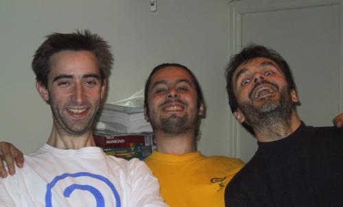
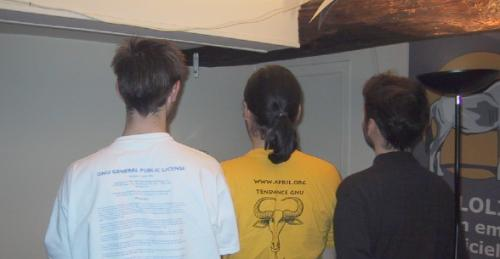
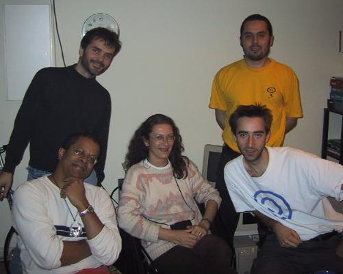

|
|
|
La FSF France est une association loi 1901 qui représentera
la FSF Europe en France.

FSF France team de face
La FSF France, sous son nom complet Free Software
Foundation Europe - Chapter France a été créée le
jeudi 19 avril 2001.
La signature
électronique des statuts peut être
vérifiée en utilisant les clés publiques des
signataires par la commande
gpg --verify Constitution-fr.fr.tex.sig Constitution-fr.fr.tex

FSF France team de dos
Rodolphe Quiédeville créateur de Lolix
|
La société Lolix nous avait
fait l'honneur de nous héberger pour le
changement de statuts de l'association (type
loi 1901) GNA (GNA's Not Axis).
|

Les membres de l'association GNA
Les modifications de l'association sont les suivantes :
- Modification des statuts
- Transfert du siège de l'association aux locaux de Lolix S.A., 8, rue de Valois 75001 Paris
- Renouvellement du bureau. Résultats :
-
La demande d'affiliation à la FSF Europe lui sera
soumise dans les meilleurs délais.
Nous tenons à remercier les président, secrétaire et
trésorier sortants qui sont
|